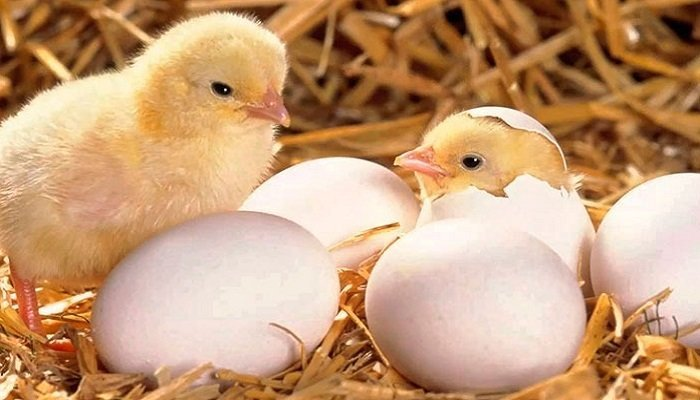

Eggtech es una incubadora de pollos inteligente representa una innovación revolucionaria en la cría de aves,
combinando tecnología avanzada con prácticas eficientes para mejorar la producción avícola y
promover el bienestar animal.
Esta incubadora está diseñada con un conjunto de objetivos claros que abordan tanto las necesidades de los criadores como los impactos en la sociedad en general.
El cual consiste en que cada cierto tiempo se mida la temperatura de la incubadora, y que nos avise
cuando los pollitos están listos para salir.
En el corazón de la incubadora de pollos inteligente yace una amalgama de sensores, algoritmos avanzados y sistemas de control automatizado.
Estos elementos trabajan en armonía para monitorear y regular con precisión condiciones como temperatura, humedad y ventilación,
creando un entorno óptimo para el desarrollo embrionario.
Los sensores de temperatura y humedad detectan y ajustan automáticamente los niveles según
las necesidades específicas de los huevos en incubación,
mientras que los sistemas de ventilación garantizan una circulación de aire adecuada para mantener una atmósfera óptima en la incubadora.
La eficiencia es una piedra angular de la incubadora de pollos inteligente.
Al optimizar el proceso de incubación y reducir las tasas de mortalidad embrionaria,
esta tecnología aumenta significativamente las tasas de eclosión, maximizando así la producción de polluelos de alta calidad.
Además, la incubadora inteligente incorpora características diseñadas para mejorar la sostenibilidad de la cría avícola.
El uso eficiente de recursos como energía y agua, junto con la reducción del desperdicio de alimentos,
contribuye a una cadena de suministro más sostenible y respetuosa con el medio ambiente.
Uno de los aspectos más destacados de la incubadora inteligente es su enfoque en el bienestar animal.
Desde el momento en que los huevos son colocados en la incubadora,
se implementan medidas para asegurar que los embriones se desarrollen en condiciones que imiten lo más fielmente posible el entorno natural.
Esto incluye la simulación de ciclos de luz y oscuridad para imitar el ciclo circadiano y proporcionar un entorno acogedor para el desarrollo embrionario.
Además, la incubadora está diseñada para minimizar el estrés durante el proceso de eclosión,
proporcionando un ambiente tranquilo y seguro que fomente un inicio de vida saludable para los polluelos.